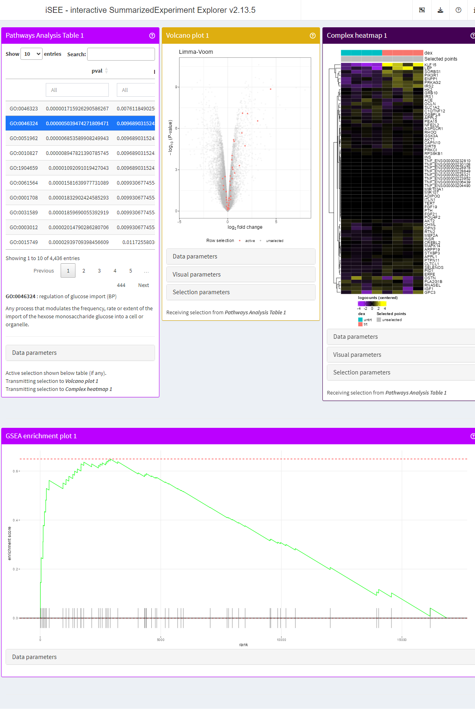

Integration with other panels
Kevin Rue-Albrecht
University of Oxfordkevin.rue-albrecht@imm.ox.ac.uk
17 August 2023
Source:vignettes/integration.Rmd
integration.RmdScenario
In this vignette, we use the example of a differential expression and pathway analysis workflow to demonstrate how a selection made in a panel of pathway analysis results may be transmitted to other row-oriented panels in the iSEE application.
Example data
We use the ?airway data set.
We briefly adjust the reference level of the treatment factor to the untreated condition.
We also map the Ensembl gene identifiers to more recognisable gene symbols, setting row names to a unique identifier composed of either gene symbol, gene identifier, of a concatenate of both.
library("org.Hs.eg.db")
library("scater")
rowData(airway)[["ENSEMBL"]] <- rownames(airway)
rowData(airway)[["SYMBOL"]] <- mapIds(org.Hs.eg.db, rownames(airway), "SYMBOL", "ENSEMBL")
rowData(airway)[["uniquifyFeatureNames"]] <- uniquifyFeatureNames(
ID = rowData(airway)[["ENSEMBL"]],
names = rowData(airway)[["SYMBOL"]]
)
rownames(airway) <- rowData(airway)[["uniquifyFeatureNames"]]We also compute log-counts for better visualisation of differential expression in the iSEE app.
library("scuttle")
airway <- logNormCounts(airway)We run a standard Limma-Voom analysis using
limma::voom(), limma::lmFit(),
limma::makeContrasts(), and
limma::eBayes().
library("edgeR")
counts <- assay(airway, "counts")
design <- model.matrix(~ 0 + dex + cell, data = colData(airway))
keep <- filterByExpr(counts, design)
v <- voom(counts[keep,], design, plot=FALSE)
fit <- lmFit(v, design)
contr <- makeContrasts("dextrt - dexuntrt", levels = colnames(coef(fit)))
tmp <- contrasts.fit(fit, contr)
tmp <- eBayes(tmp)
res_limma <- topTable(tmp, sort.by = "P", n = Inf)
head(res_limma)
#> logFC AveExpr t P.Value adj.P.Val B
#> CACNB2 3.205598 3.682244 36.49009 2.370569e-11 3.996779e-07 16.03257
#> DUSP1 2.864775 6.644455 28.95296 2.000429e-10 9.657686e-07 14.66891
#> MAOA 3.256099 5.950559 28.29381 2.472372e-10 9.657686e-07 14.44796
#> SPARCL1 4.489075 4.166904 27.99497 2.725926e-10 9.657686e-07 14.01663
#> PRSS35 -2.828186 3.224885 -27.47899 3.234271e-10 9.657686e-07 13.80831
#> STEAP2 1.894563 6.790009 26.91396 3.914512e-10 9.657686e-07 14.03974Then, we embed this set of differential expression results in the
?airway object using the
iSEEde::embedContrastResults() method.
library("iSEEde")
#> Loading required package: iSEE
airway <- iSEEde::embedContrastResults(res_limma, airway, name = "Limma-Voom", class = "limma")
rowData(airway)
#> DataFrame with 63677 rows and 14 columns
#> gene_id gene_name entrezid gene_biotype
#> <character> <character> <integer> <character>
#> TSPAN6 ENSG00000000003 TSPAN6 NA protein_coding
#> TNMD ENSG00000000005 TNMD NA protein_coding
#> DPM1 ENSG00000000419 DPM1 NA protein_coding
#> SCYL3 ENSG00000000457 SCYL3 NA protein_coding
#> FIRRM ENSG00000000460 C1orf112 NA protein_coding
#> ... ... ... ... ...
#> ENSG00000273489 ENSG00000273489 RP11-180C16.1 NA antisense
#> ENSG00000273490 ENSG00000273490 TSEN34 NA protein_coding
#> ENSG00000273491 ENSG00000273491 RP11-138A9.2 NA lincRNA
#> ENSG00000273492 ENSG00000273492 AP000230.1 NA lincRNA
#> ENSG00000273493 ENSG00000273493 RP11-80H18.4 NA lincRNA
#> gene_seq_start gene_seq_end seq_name seq_strand
#> <integer> <integer> <character> <integer>
#> TSPAN6 99883667 99894988 X -1
#> TNMD 99839799 99854882 X 1
#> DPM1 49551404 49575092 20 -1
#> SCYL3 169818772 169863408 1 -1
#> FIRRM 169631245 169823221 1 1
#> ... ... ... ... ...
#> ENSG00000273489 131178723 131182453 7 -1
#> ENSG00000273490 54693789 54697585 HSCHR19LRC_LRC_J_CTG1 1
#> ENSG00000273491 130600118 130603315 HG1308_PATCH 1
#> ENSG00000273492 27543189 27589700 21 1
#> ENSG00000273493 58315692 58315845 3 1
#> seq_coord_system symbol ENSEMBL SYMBOL
#> <integer> <character> <character> <character>
#> TSPAN6 NA TSPAN6 ENSG00000000003 TSPAN6
#> TNMD NA TNMD ENSG00000000005 TNMD
#> DPM1 NA DPM1 ENSG00000000419 DPM1
#> SCYL3 NA SCYL3 ENSG00000000457 SCYL3
#> FIRRM NA C1orf112 ENSG00000000460 FIRRM
#> ... ... ... ... ...
#> ENSG00000273489 NA RP11-180C16.1 ENSG00000273489 NA
#> ENSG00000273490 NA TSEN34 ENSG00000273490 NA
#> ENSG00000273491 NA RP11-138A9.2 ENSG00000273491 NA
#> ENSG00000273492 NA AP000230.1 ENSG00000273492 NA
#> ENSG00000273493 NA RP11-80H18.4 ENSG00000273493 NA
#> uniquifyFeatureNames iSEEde
#> <character> <DataFrame>
#> TSPAN6 TSPAN6 <iSEELimmaResults>
#> TNMD TNMD <iSEELimmaResults>
#> DPM1 DPM1 <iSEELimmaResults>
#> SCYL3 SCYL3 <iSEELimmaResults>
#> FIRRM FIRRM <iSEELimmaResults>
#> ... ... ...
#> ENSG00000273489 ENSG00000273489 <iSEELimmaResults>
#> ENSG00000273490 ENSG00000273490 <iSEELimmaResults>
#> ENSG00000273491 ENSG00000273491 <iSEELimmaResults>
#> ENSG00000273492 ENSG00000273492 <iSEELimmaResults>
#> ENSG00000273493 ENSG00000273493 <iSEELimmaResults>We prepare Gene Ontology gene sets of biological pathways using org.Hs.eg.db.
Due to the use of uniquifyFeatureNames() above, we must
first map pathway identifiers to the unique Ensembl gene identifier, to
accurately perform pathway analysis using the feature identifiers
matching those of the embedded differential expression results.
library("org.Hs.eg.db")
pathways <- select(org.Hs.eg.db, keys(org.Hs.eg.db, "ENSEMBL"), c("GOALL"), keytype = "ENSEMBL")
#> 'select()' returned 1:many mapping between keys and columns
pathways <- subset(pathways, ONTOLOGYALL == "BP")
pathways <- unique(pathways[, c("ENSEMBL", "GOALL")])
pathways <- merge(pathways, rowData(airway)[, c("ENSEMBL", "uniquifyFeatureNames")])
pathways <- split(pathways$uniquifyFeatureNames, pathways$GOALL)Separately, we define and register a function that fetches the gene identifiers associated with a given pathway identifier. This function is required to transmit selections from pathway-level panels to feature-level panels.
Due to the use of uniquifyFeatureNames() above, the
function must first map to the unique Ensembl gene identifier, to
accurately identify the corresponding value in
rownames(airway).
map_GO <- function(pathway_id, se) {
pathway_ensembl <- mapIds(org.Hs.eg.db, pathway_id, "ENSEMBL", keytype = "GOALL", multiVals = "CharacterList")[[pathway_id]]
pathway_rownames <- rownames(se)[rowData(se)[["gene_id"]] %in% pathway_ensembl]
pathway_rownames
}
airway <- registerAppOptions(airway, Pathways.map.functions = list(GO = map_GO))We run a standard GSEA analysis using fgsea.
library("fgsea")
set.seed(42)
stats <- na.omit(log2FoldChange(contrastResults(airway, "Limma-Voom")))
fgseaRes <- fgsea(pathways = pathways,
stats = stats,
minSize = 15,
maxSize = 500)
#> Warning in preparePathwaysAndStats(pathways, stats, minSize, maxSize, gseaParam, : There are ties in the preranked stats (0.05% of the list).
#> The order of those tied genes will be arbitrary, which may produce unexpected results.
head(fgseaRes[order(pval), ])
#> pathway pval padj log2err ES NES size
#> 1: GO:0046323 1.715926e-06 0.007611849 0.6435518 0.6494534 2.175684 56
#> 2: GO:0046324 5.039474e-06 0.009689032 0.6105269 0.6738657 2.190100 45
#> 3: GO:0051962 6.853590e-06 0.009689032 0.6105269 -0.4584795 -1.721120 206
#> 4: GO:0010827 8.947821e-06 0.009689032 0.5933255 0.6240784 2.105554 57
#> 5: GO:1904659 1.092091e-05 0.009689032 0.5933255 0.5637517 2.044871 80
#> 6: GO:0061564 1.581640e-05 0.009930677 0.5756103 -0.3974480 -1.578420 354
#> leadingEdge
#> 1: KLF15,LEP,SORT1,IRS2,SORBS1,PRKAG2,...
#> 2: KLF15,LEP,IRS2,SORBS1,PRKAG2,PIK3R1,...
#> 3: LRRTM2,WNT2,SLITRK6,EGR2,ASIC2,LIF,...
#> 4: KLF15,LEP,IRS2,NR4A3,SORBS1,PRKAG2,...
#> 5: KLF15,LEP,SORT1,IRS2,NR4A3,SORBS1,...
#> 6: VASH2,SLITRK6,EGR2,RPS6KA5,ADCY1,FLRT3,...Then, we embed this set of pathway analysis results in the
airway object, using the
?iSEEpathways::embedPathwaysResults method.
But first, we reorder the results by increasing p-value, and set the
rownames to the pathway identifier. Although not essential,
this implicitly defines the default ordering of the table in the live
app.
library("iSEEpathways")
fgseaRes <- fgseaRes[order(pval), ]
airway <- embedPathwaysResults(
fgseaRes, airway, name = "fgsea (p-value)", class = "fgsea",
pathwayType = "GO", pathwaysList = pathways, featuresStats = stats)
airway
#> class: RangedSummarizedExperiment
#> dim: 63677 8
#> metadata(3): '' iSEE iSEEpathways
#> assays(2): counts logcounts
#> rownames(63677): TSPAN6 TNMD ... ENSG00000273492 ENSG00000273493
#> rowData names(14): gene_id gene_name ... uniquifyFeatureNames iSEEde
#> colnames(8): SRR1039508 SRR1039509 ... SRR1039520 SRR1039521
#> colData names(9): SampleName cell ... Sample BioSampleTo showcase a choice of pathway analysis results in the live ap, we repeat the process above, this time sorting by a different score that combines the log-transformed p-value and the absolute log-transformed fold-change.
stats <- na.omit(
log2FoldChange(contrastResults(airway, "Limma-Voom")) *
-log10(pValue(contrastResults(airway, "Limma-Voom")))
)
set.seed(42)
fgseaRes <- fgsea(pathways = pathways,
stats = na.omit(stats),
minSize = 15,
maxSize = 500)
fgseaRes <- fgseaRes[order(pval), ]
airway <- embedPathwaysResults(
fgseaRes, airway, name = "fgsea (p-value & fold-change)", class = "fgsea",
pathwayType = "GO", pathwaysList = pathways, featuresStats = stats)
airway
#> class: RangedSummarizedExperiment
#> dim: 63677 8
#> metadata(3): '' iSEE iSEEpathways
#> assays(2): counts logcounts
#> rownames(63677): TSPAN6 TNMD ... ENSG00000273492 ENSG00000273493
#> rowData names(14): gene_id gene_name ... uniquifyFeatureNames iSEEde
#> colnames(8): SRR1039508 SRR1039509 ... SRR1039520 SRR1039521
#> colData names(9): SampleName cell ... Sample BioSampleFor further user-friendliness in the live app, we define and register a function that displays details for the selected Gene Ontology gene set using the GO.db package.
library("GO.db")
#>
library("shiny")
#>
#> Attaching package: 'shiny'
#> The following object is masked from 'package:BiocStyle':
#>
#> markdown
library("iSEE")
go_details <- function(x) {
info <- select(GO.db, x, c("TERM", "ONTOLOGY", "DEFINITION"), "GOID")
html <- list(p(strong(info$GOID), ":", info$TERM, paste0("(", info$ONTOLOGY, ")")))
if (!is.na(info$DEFINITION)) {
html <- append(html, list(p(info$DEFINITION)))
}
tagList(html)
}
airway <- registerAppOptions(airway, PathwaysTable.select.details = go_details)Finally, we configure the initial state and launch the live app.
app <- iSEE(airway, initial = list(
PathwaysTable(ResultName="fgsea (p-value)", Selected = "GO:0046323", PanelWidth = 4L),
VolcanoPlot(RowSelectionSource = "PathwaysTable1", ColorBy = "Row selection", PanelWidth = 4L),
ComplexHeatmapPlot(RowSelectionSource = "PathwaysTable1",
PanelWidth = 4L, PanelHeight = 700L,
CustomRows = FALSE, ColumnData = "dex",
ClusterRows = TRUE, ClusterRowsDistance = "euclidean", AssayCenterRows = TRUE),
FgseaEnrichmentPlot(ResultName="fgsea (p-value)", PathwayId = "GO:0046323", PanelWidth = 12L)
))
if (interactive()) {
shiny::runApp(app)
}
Trading off memory usage for speed
The function map_GO() that we defined earlier to map a
pathway identifier to a set of gene identifiers uses the org.Hs.eg.db
package and the ?AnnotationDbi::select() function.
While memory-efficient, the repeated calls to the database of gene annotations introduce a bottleneck that limits the reactivity of the app.
We can restore the speed of the app rendering by trading off an
increased memory usage. Specifically, we can use the object
pathways that we created earlier as a named list of pathway
identifiers and character vectors of gene identifiers associated with
each pathway, instead of querying the GO.db database.
First, for the app to be self-contained, the list of pathways should
be stored within the airway object itself.
Then, we can write a new, faster, function that fetches gene
identifiers directly from that list rather than the database. The
function should take as first argument a single pathway identifier, and
the second argument must be called se to match the name of
the SummarizedExperiment object used within the app.
As a a trade off, the app now relies on the list of pathway
annotations being available in the metadata of the se
object, using additional memory for the benefit of dramatically faster
access.
map_GO_v2 <- function(pathway_id, se) {
pathway_list <- metadata(se)[["pathways"]][["GO"]]
if (!pathway_id %in% names(pathway_list)) {
warning("Pathway identifier %s not found.", sQuote(pathway_id))
return(character(0))
}
pathway_list[[pathway_id]]
}
airway <- registerAppOptions(airway, Pathways.map.functions = list(GO = map_GO_v2))We can then launch a new instance of the app, using the same initial
configuration, but the update airway object.
app <- iSEE(airway, initial = list(
PathwaysTable(ResultName="fgsea (p-value)", Selected = "GO:0046323", PanelWidth = 4L),
VolcanoPlot(RowSelectionSource = "PathwaysTable1", ColorBy = "Row selection", PanelWidth = 4L),
ComplexHeatmapPlot(RowSelectionSource = "PathwaysTable1",
PanelWidth = 4L, PanelHeight = 700L,
CustomRows = FALSE, ColumnData = "dex",
ClusterRows = TRUE, ClusterRowsDistance = "euclidean", AssayCenterRows = TRUE),
FgseaEnrichmentPlot(ResultName="fgsea (p-value)", PathwayId = "GO:0046323", PanelWidth = 12L)
))
if (interactive()) {
shiny::runApp(app)
}
Reproducibility
The iSEEpathways package (Rue-Albrecht, 2023) was made possible thanks to:
- R (R Core Team, 2023)
- BiocStyle (Oleś, 2023)
- knitr (Xie, 2023)
- RefManageR (McLean, 2017)
- rmarkdown (Allaire, Xie, Dervieux, McPherson, Luraschi, Ushey, Atkins, Wickham, Cheng, Chang, and Iannone, 2023)
- sessioninfo (Wickham, Chang, Flight, Müller, and Hester, 2021)
- testthat (Wickham, 2011)
This package was developed using biocthis.
Code for creating the vignette
## Create the vignette
library("rmarkdown")
system.time(render("integration.Rmd", "BiocStyle::html_document"))
## Extract the R code
library("knitr")
knit("integration.Rmd", tangle = TRUE)Date the vignette was generated.
#> [1] "2023-08-17 15:48:45 UTC"Wallclock time spent generating the vignette.
#> Time difference of 1.531 minsR session information.
#> ─ Session info ───────────────────────────────────────────────────────────────────────────────────────────────────────
#> setting value
#> version R version 4.3.1 (2023-06-16)
#> os Ubuntu 22.04.2 LTS
#> system x86_64, linux-gnu
#> ui X11
#> language en
#> collate en_US.UTF-8
#> ctype en_US.UTF-8
#> tz UTC
#> date 2023-08-17
#> pandoc 3.1.1 @ /usr/local/bin/ (via rmarkdown)
#>
#> ─ Packages ───────────────────────────────────────────────────────────────────────────────────────────────────────────
#> package * version date (UTC) lib source
#> abind 1.4-5 2016-07-21 [1] CRAN (R 4.3.1)
#> airway * 1.21.0 2023-04-27 [1] Bioconductor
#> AnnotationDbi * 1.63.2 2023-07-02 [1] Bioconductor
#> backports 1.4.1 2021-12-13 [1] CRAN (R 4.3.1)
#> beachmat 2.17.15 2023-08-06 [1] Bioconductor
#> beeswarm 0.4.0 2021-06-01 [1] CRAN (R 4.3.1)
#> bibtex 0.5.1 2023-01-26 [1] CRAN (R 4.3.1)
#> Biobase * 2.61.0 2023-04-25 [1] Bioconductor
#> BiocGenerics * 0.47.0 2023-04-25 [1] Bioconductor
#> BiocManager 1.30.22 2023-08-08 [2] CRAN (R 4.3.1)
#> BiocNeighbors 1.19.0 2023-04-25 [1] Bioconductor
#> BiocParallel 1.35.3 2023-07-07 [1] Bioconductor
#> BiocSingular 1.17.1 2023-07-09 [1] Bioconductor
#> BiocStyle * 2.29.1 2023-07-19 [1] Bioconductor
#> Biostrings 2.69.2 2023-07-02 [1] Bioconductor
#> bit 4.0.5 2022-11-15 [1] CRAN (R 4.3.1)
#> bit64 4.0.5 2020-08-30 [1] CRAN (R 4.3.1)
#> bitops 1.0-7 2021-04-24 [1] CRAN (R 4.3.1)
#> blob 1.2.4 2023-03-17 [1] CRAN (R 4.3.1)
#> bookdown 0.35 2023-08-09 [1] CRAN (R 4.3.1)
#> bslib 0.5.1 2023-08-11 [2] CRAN (R 4.3.1)
#> cachem 1.0.8 2023-05-01 [2] CRAN (R 4.3.1)
#> circlize 0.4.15 2022-05-10 [1] CRAN (R 4.3.1)
#> cli 3.6.1 2023-03-23 [2] CRAN (R 4.3.1)
#> clue 0.3-64 2023-01-31 [1] CRAN (R 4.3.1)
#> cluster 2.1.4 2022-08-22 [3] CRAN (R 4.3.1)
#> codetools 0.2-19 2023-02-01 [3] CRAN (R 4.3.1)
#> colorspace 2.1-0 2023-01-23 [1] CRAN (R 4.3.1)
#> colourpicker 1.2.0 2022-10-28 [1] CRAN (R 4.3.1)
#> ComplexHeatmap 2.17.0 2023-04-25 [1] Bioconductor
#> cowplot 1.1.1 2020-12-30 [1] CRAN (R 4.3.1)
#> crayon 1.5.2 2022-09-29 [2] CRAN (R 4.3.1)
#> data.table 1.14.8 2023-02-17 [1] CRAN (R 4.3.1)
#> DBI 1.1.3 2022-06-18 [1] CRAN (R 4.3.1)
#> DelayedArray 0.27.10 2023-07-28 [1] Bioconductor
#> DelayedMatrixStats 1.23.4 2023-08-09 [1] Bioconductor
#> desc 1.4.2 2022-09-08 [2] CRAN (R 4.3.1)
#> DESeq2 1.41.6 2023-07-24 [1] Bioconductor
#> digest 0.6.33 2023-07-07 [2] CRAN (R 4.3.1)
#> doParallel 1.0.17 2022-02-07 [1] CRAN (R 4.3.1)
#> dplyr 1.1.2 2023-04-20 [1] CRAN (R 4.3.1)
#> DT 0.28 2023-05-18 [1] CRAN (R 4.3.1)
#> edgeR * 3.43.8 2023-08-02 [1] Bioconductor
#> ellipsis 0.3.2 2021-04-29 [2] CRAN (R 4.3.1)
#> evaluate 0.21 2023-05-05 [2] CRAN (R 4.3.1)
#> fansi 1.0.4 2023-01-22 [2] CRAN (R 4.3.1)
#> fastmap 1.1.1 2023-02-24 [2] CRAN (R 4.3.1)
#> fastmatch 1.1-3 2021-07-23 [1] CRAN (R 4.3.1)
#> fgsea * 1.27.1 2023-08-15 [1] Bioconductor
#> fontawesome 0.5.1 2023-04-18 [2] CRAN (R 4.3.1)
#> foreach 1.5.2 2022-02-02 [1] CRAN (R 4.3.1)
#> fs 1.6.3 2023-07-20 [2] CRAN (R 4.3.1)
#> generics 0.1.3 2022-07-05 [1] CRAN (R 4.3.1)
#> GenomeInfoDb * 1.37.2 2023-06-21 [1] Bioconductor
#> GenomeInfoDbData 1.2.10 2023-08-01 [1] Bioconductor
#> GenomicRanges * 1.53.1 2023-05-04 [1] Bioconductor
#> GetoptLong 1.0.5 2020-12-15 [1] CRAN (R 4.3.1)
#> ggbeeswarm 0.7.2 2023-04-29 [1] CRAN (R 4.3.1)
#> ggplot2 * 3.4.3 2023-08-14 [1] CRAN (R 4.3.1)
#> ggrepel 0.9.3 2023-02-03 [1] CRAN (R 4.3.1)
#> GlobalOptions 0.1.2 2020-06-10 [1] CRAN (R 4.3.1)
#> glue 1.6.2 2022-02-24 [2] CRAN (R 4.3.1)
#> GO.db * 3.17.0 2023-08-01 [1] Bioconductor
#> gridExtra 2.3 2017-09-09 [1] CRAN (R 4.3.1)
#> gtable 0.3.3 2023-03-21 [1] CRAN (R 4.3.1)
#> highr 0.10 2022-12-22 [2] CRAN (R 4.3.1)
#> htmltools 0.5.6 2023-08-10 [2] CRAN (R 4.3.1)
#> htmlwidgets 1.6.2 2023-03-17 [2] CRAN (R 4.3.1)
#> httpuv 1.6.11 2023-05-11 [2] CRAN (R 4.3.1)
#> httr 1.4.7 2023-08-15 [2] CRAN (R 4.3.1)
#> igraph 1.5.1 2023-08-10 [1] CRAN (R 4.3.1)
#> IRanges * 2.35.2 2023-06-22 [1] Bioconductor
#> irlba 2.3.5.1 2022-10-03 [1] CRAN (R 4.3.1)
#> iSEE * 2.13.5 2023-07-23 [1] Bioconductor
#> iSEEde * 0.99.0 2023-08-14 [1] Github (iSEE/iSEEde@dc2eb18)
#> iSEEpathways * 0.99.0 2023-08-17 [1] Bioconductor
#> iterators 1.0.14 2022-02-05 [1] CRAN (R 4.3.1)
#> jquerylib 0.1.4 2021-04-26 [2] CRAN (R 4.3.1)
#> jsonlite 1.8.7 2023-06-29 [2] CRAN (R 4.3.1)
#> KEGGREST 1.41.0 2023-04-25 [1] Bioconductor
#> knitr 1.43 2023-05-25 [2] CRAN (R 4.3.1)
#> later 1.3.1 2023-05-02 [2] CRAN (R 4.3.1)
#> lattice 0.21-8 2023-04-05 [3] CRAN (R 4.3.1)
#> lifecycle 1.0.3 2022-10-07 [2] CRAN (R 4.3.1)
#> limma * 3.57.7 2023-08-02 [1] Bioconductor
#> locfit 1.5-9.8 2023-06-11 [1] CRAN (R 4.3.1)
#> lubridate 1.9.2 2023-02-10 [1] CRAN (R 4.3.1)
#> magrittr 2.0.3 2022-03-30 [2] CRAN (R 4.3.1)
#> Matrix 1.6-1 2023-08-14 [2] CRAN (R 4.3.1)
#> MatrixGenerics * 1.13.1 2023-07-25 [1] Bioconductor
#> matrixStats * 1.0.0 2023-06-02 [1] CRAN (R 4.3.1)
#> memoise 2.0.1 2021-11-26 [2] CRAN (R 4.3.1)
#> mgcv 1.9-0 2023-07-11 [2] CRAN (R 4.3.1)
#> mime 0.12 2021-09-28 [2] CRAN (R 4.3.1)
#> miniUI 0.1.1.1 2018-05-18 [2] CRAN (R 4.3.1)
#> munsell 0.5.0 2018-06-12 [1] CRAN (R 4.3.1)
#> nlme 3.1-163 2023-08-09 [2] CRAN (R 4.3.1)
#> org.Hs.eg.db * 3.17.0 2023-08-01 [1] Bioconductor
#> pillar 1.9.0 2023-03-22 [2] CRAN (R 4.3.1)
#> pkgconfig 2.0.3 2019-09-22 [2] CRAN (R 4.3.1)
#> pkgdown 2.0.7 2022-12-14 [2] CRAN (R 4.3.1)
#> plyr 1.8.8 2022-11-11 [1] CRAN (R 4.3.1)
#> png 0.1-8 2022-11-29 [1] CRAN (R 4.3.1)
#> promises 1.2.1 2023-08-10 [2] CRAN (R 4.3.1)
#> purrr 1.0.2 2023-08-10 [2] CRAN (R 4.3.1)
#> R6 2.5.1 2021-08-19 [2] CRAN (R 4.3.1)
#> ragg 1.2.5 2023-01-12 [2] CRAN (R 4.3.1)
#> RColorBrewer 1.1-3 2022-04-03 [1] CRAN (R 4.3.1)
#> Rcpp 1.0.11 2023-07-06 [2] CRAN (R 4.3.1)
#> RCurl 1.98-1.12 2023-03-27 [1] CRAN (R 4.3.1)
#> RefManageR * 1.4.0 2022-09-30 [1] CRAN (R 4.3.1)
#> rintrojs 0.3.2 2022-08-09 [1] CRAN (R 4.3.1)
#> rjson 0.2.21 2022-01-09 [1] CRAN (R 4.3.1)
#> rlang 1.1.1 2023-04-28 [2] CRAN (R 4.3.1)
#> rmarkdown 2.24 2023-08-14 [2] CRAN (R 4.3.1)
#> rprojroot 2.0.3 2022-04-02 [2] CRAN (R 4.3.1)
#> RSQLite 2.3.1 2023-04-03 [1] CRAN (R 4.3.1)
#> rsvd 1.0.5 2021-04-16 [1] CRAN (R 4.3.1)
#> S4Arrays 1.1.5 2023-07-24 [1] Bioconductor
#> S4Vectors * 0.39.1 2023-05-03 [1] Bioconductor
#> sass 0.4.7 2023-07-15 [2] CRAN (R 4.3.1)
#> ScaledMatrix 1.9.1 2023-05-03 [1] Bioconductor
#> scales 1.2.1 2022-08-20 [1] CRAN (R 4.3.1)
#> scater * 1.29.3 2023-08-02 [1] Bioconductor
#> scuttle * 1.11.2 2023-08-03 [1] Bioconductor
#> sessioninfo * 1.2.2 2021-12-06 [2] CRAN (R 4.3.1)
#> shape 1.4.6 2021-05-19 [1] CRAN (R 4.3.1)
#> shiny * 1.7.5 2023-08-12 [2] CRAN (R 4.3.1)
#> shinyAce 0.4.2 2022-05-06 [1] CRAN (R 4.3.1)
#> shinydashboard 0.7.2 2021-09-30 [1] CRAN (R 4.3.1)
#> shinyjs 2.1.0 2021-12-23 [1] CRAN (R 4.3.1)
#> shinyWidgets 0.7.6 2023-01-08 [1] CRAN (R 4.3.1)
#> SingleCellExperiment * 1.23.0 2023-04-25 [1] Bioconductor
#> SparseArray 1.1.11 2023-07-25 [1] Bioconductor
#> sparseMatrixStats 1.13.4 2023-08-11 [1] Bioconductor
#> statmod 1.5.0 2023-01-06 [1] CRAN (R 4.3.1)
#> stringi 1.7.12 2023-01-11 [2] CRAN (R 4.3.1)
#> stringr 1.5.0 2022-12-02 [2] CRAN (R 4.3.1)
#> SummarizedExperiment * 1.31.1 2023-05-01 [1] Bioconductor
#> systemfonts 1.0.4 2022-02-11 [2] CRAN (R 4.3.1)
#> textshaping 0.3.6 2021-10-13 [2] CRAN (R 4.3.1)
#> tibble 3.2.1 2023-03-20 [2] CRAN (R 4.3.1)
#> tidyselect 1.2.0 2022-10-10 [1] CRAN (R 4.3.1)
#> timechange 0.2.0 2023-01-11 [1] CRAN (R 4.3.1)
#> utf8 1.2.3 2023-01-31 [2] CRAN (R 4.3.1)
#> vctrs 0.6.3 2023-06-14 [2] CRAN (R 4.3.1)
#> vipor 0.4.5 2017-03-22 [1] CRAN (R 4.3.1)
#> viridis 0.6.4 2023-07-22 [1] CRAN (R 4.3.1)
#> viridisLite 0.4.2 2023-05-02 [1] CRAN (R 4.3.1)
#> withr 2.5.0 2022-03-03 [2] CRAN (R 4.3.1)
#> xfun 0.40 2023-08-09 [2] CRAN (R 4.3.1)
#> xml2 1.3.5 2023-07-06 [2] CRAN (R 4.3.1)
#> xtable 1.8-4 2019-04-21 [2] CRAN (R 4.3.1)
#> XVector 0.41.1 2023-05-03 [1] Bioconductor
#> yaml 2.3.7 2023-01-23 [2] CRAN (R 4.3.1)
#> zlibbioc 1.47.0 2023-04-25 [1] Bioconductor
#>
#> [1] /__w/_temp/Library
#> [2] /usr/local/lib/R/site-library
#> [3] /usr/local/lib/R/library
#>
#> ──────────────────────────────────────────────────────────────────────────────────────────────────────────────────────Bibliography
This vignette was generated using BiocStyle (Oleś, 2023) with knitr (Xie, 2023) and rmarkdown (Allaire, Xie, Dervieux et al., 2023) running behind the scenes.
Citations made with RefManageR (McLean, 2017).
[1] J. Allaire, Y. Xie, C. Dervieux, et al. rmarkdown: Dynamic Documents for R. R package version 2.24. 2023. URL: https://github.com/rstudio/rmarkdown.
[2] M. W. McLean. “RefManageR: Import and Manage BibTeX and BibLaTeX References in R”. In: The Journal of Open Source Software (2017). DOI: 10.21105/joss.00338.
[3] A. Oleś. BiocStyle: Standard styles for vignettes and other Bioconductor documents. R package version 2.29.1. 2023. DOI: 10.18129/B9.bioc.BiocStyle. URL: https://bioconductor.org/packages/BiocStyle.
[4] R Core Team. R: A Language and Environment for Statistical Computing. R Foundation for Statistical Computing. Vienna, Austria, 2023. URL: https://www.R-project.org/.
[5] K. Rue-Albrecht. iSEEpathways: iSEE extension for panels related to pathway analysis. R package version 0.99.0. 2023. URL: https://github.com/iSEE/iSEEpathways.
[6] H. Wickham. “testthat: Get Started with Testing”. In: The R Journal 3 (2011), pp. 5–10. URL: https://journal.r-project.org/archive/2011-1/RJournal_2011-1_Wickham.pdf.
[7] H. Wickham, W. Chang, R. Flight, et al. sessioninfo: R Session Information. R package version 1.2.2. 2021. URL: https://CRAN.R-project.org/package=sessioninfo.
[8] Y. Xie. knitr: A General-Purpose Package for Dynamic Report Generation in R. R package version 1.43. 2023. URL: https://yihui.org/knitr/.